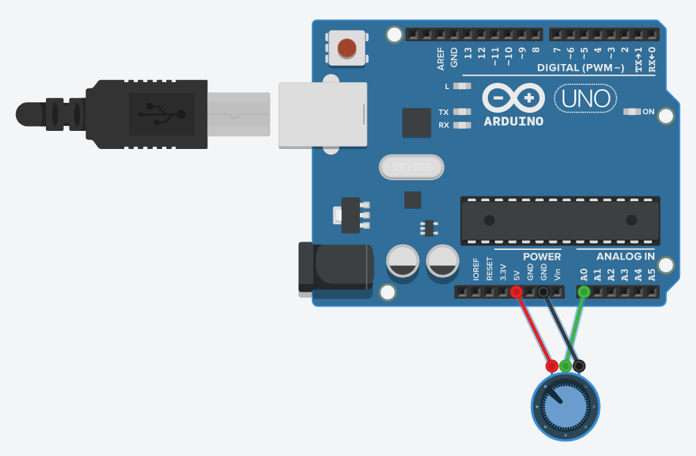
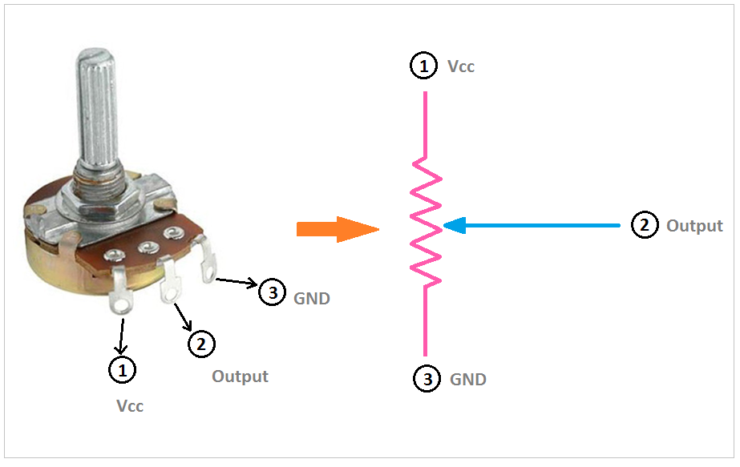
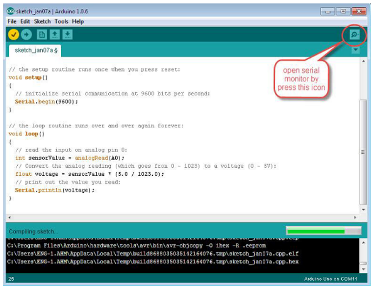

This example will show you how to read an analog input on analog pin 0. The input is converted from analogRead() into voltage, and printed out to the serial monitor of the Arduino Software (IDE).
Components Required¶
You will need the following components −
- 1 × Breadboard
- 1 × Arduino Uno R3
- 1 × 5K variable resistor (potentiometer)
- 2 × Jumper
Procedure¶
Follow the circuit diagram and hook up the components on the breadboard as shown in the image given below.

Potentiometer¶
A potentiometer (or pot) is a simple electro-mechanical transducer. It converts rotary or linear motion from the input operator into a change of resistance. This change is (or can be) used to control anything from the volume of a hi-fi system to the direction of a huge container ship.
The pot as we know it was originally known as a rheostat (essentially a variable wirewound resistor). The variety of available pots is now quite astonishing, and it can be very difficult for the beginner (in particular) to work out which type is suitable for a given task. A few different pot types, which can all be used for the same task makes the job harder.

The image on the right shows the standard schematic symbol of a pot. The image on the left is the potentiometer.
Sketch¶
Open the Arduino IDE software on your computer. Coding in the Arduino language will control your circuit. Open a new sketch File by clicking New.
Arduino Code¶
/*
ReadAnalogVoltage
Reads an analog input on pin 0, converts it to voltage,
and prints the result to the serial monitor.
Graphical representation is available using serial plotter (Tools > Serial Plotter menu)
Attach the center pin of a potentiometer to pin A0, and the outside pins to +5V and ground.
*/
// the setup routine runs once when you press reset:
void setup() {
// initialize serial communication at 9600 bits per second:
Serial.begin(9600);
}
// the loop routine runs over and over again forever:
void loop() {
// read the input on analog pin 0:
int sensorValue = analogRead(A0);
// Convert the analog reading (which goes from 0 - 1023) to a voltage (0 - 5V):
float voltage = sensorValue * (5.0 / 1023.0);
// print out the value you read:
Serial.println(voltage);
}
Code to Note¶
In the program or sketch given below, the first thing that you do in the setup function is begin serial communications, at 9600 bits per second, between your board and your computer with the line −
Serial.begin(9600);
In the main loop of your code, you need to establish a variable to store the resistance value (which will be between 0 and 1023, perfect for an int datatype) coming from your potentiometer −
int sensorValue = analogRead(A0);
To change the values from 0-1023 to a range that corresponds to the voltage, the pin is reading, you need to create another variable, a float, and do a little calculation. To scale the numbers between 0.0 and 5.0, divide 5.0 by 1023.0 and multiply that by sensorValue −
float voltage= sensorValue * (5.0 / 1023.0);
Finally, you need to print this information to your serial window. You can do this with the command Serial.println() in your last line of code −
Serial.println(voltage)
Now, open Serial Monitor in the Arduino IDE by clicking the icon on the right side of the top green bar or pressing Ctrl+Shift+M.

Result¶
You will see a steady stream of numbers ranging from 0.0 - 5.0. As you turn the pot, the values will change, corresponding to the voltage at pin A0.